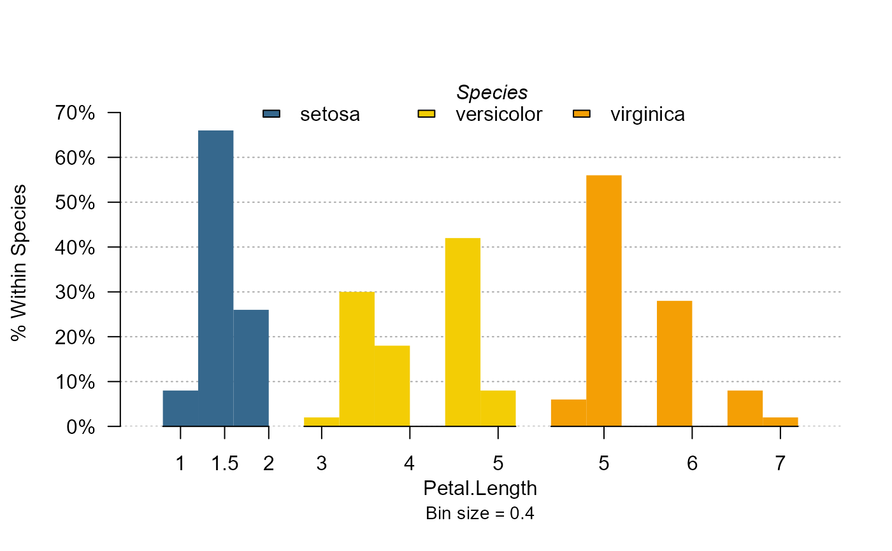
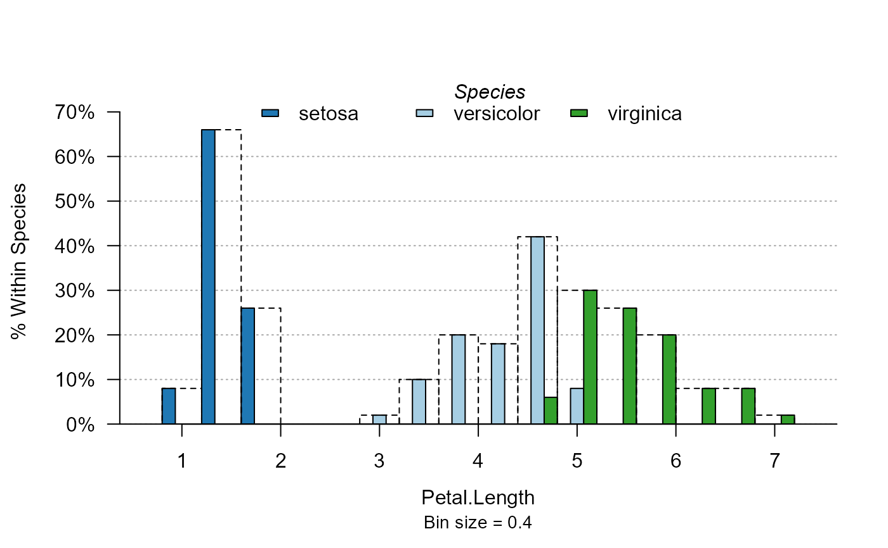

setFplot_distr.RdThe default values of most arguments of plot_distr can be
set with setFplot_distr.
setFplot_distr(
sorted,
log,
top,
yaxis.num,
col,
border = "black",
mod.method,
within,
total,
at_5,
labels.tilted,
other,
cumul = FALSE,
centered = TRUE,
weight.fun,
int.categorical,
dict = NULL,
mod.title = TRUE,
labels.angle,
cex.axis,
trunc = 20,
trunc.method = "auto",
reset = FALSE
)
getFplot_distr()Logical: should the first elements displayed be the most frequent? By default this is the case except for numeric values put to log or to integers.
Logical, only used when the data is numeric. If TRUE, then
the data is put to logarithm beforehand. By default numeric values are put to
log if the log variation exceeds 3.
What to display on the top of the bars. Can be equal to "frac" (for
shares), "nb" or "none". The default depends on the type of the plot. To disable
it you can also set it to FALSE or the empty string.
Whether the y-axis should display regular numbers instead of
frequencies in percentage points. By default it shows numbers only when the data
is weighted with a different function than the sum. For conditionnal distributions,
a numeric y-axis can be displayed only when mod.method = "sideTotal",
mod.method = "splitTotal" or mod.method = "stack", since for the
within distributions it does not make sense (because the data is rescaled for each moderator).
A vector of colors, default is close to paired. You can also use “set1” or “paired”.
Outer color of the bars. Defaults is "black". Use NA
to remove the borders.
A character scalar: either i) “split”, the default for
categorical data, ii) “side”, the default for data in logarithmic form
or numeric data, or iii) “stack”. This is only used when there is more
ù than one moderator. If "split": there is one separate histogram for each
moderator case. If "side": moderators are represented side by side for
each value of the variable. If "stack": the bars of the moderators are
stacked onto each other, the bar heights representing the distribution in the
total population. You can use the other arguments within and total
to say whether the distributions should be within each moderator or over the
total distribution.
Logical, default is missing. Whether the distributions should be
scaled to reflect the distribution within each moderator value. By default it
is TRUE if mod.method is different from "stack".
Logical, default is missing. Whether the distributions should be
scaled to reflect the total distribution (and not the distribution within each
moderator value). By default it is TRUE only if mod.method="stack".
Equal to FALSE, "roman" or "line". When plotting
categorical variables, adds a small Roman number under every 5 bars
(at_5 = "roman"), or draws a thick axis line every 5 bars (at_5 = "line").
Helps to get the rank of the bars. The default depends on the type of data --
Not implemented when there is a moderator.
Whether there should be tilted labels. Default is FALSE
except when the data is split by moderators (see mod.method).
Logical. Should there be a last column counting for the observations
not displayed? Default is TRUE except when the data is split.
Logical, default is FALSE. If TRUE, then the cumulative
distribution is plotted.
Logical, default is TRUE. For numeric data only and when
sorted=FALSE, whether the histogram should be centered on the mode.
A function, by default it is sum. Aggregate function
to be applied to the weight with respect to variable and the moderator. See examples.
Logical. Whether integers should be treated as categorical variables. By default they are treated as categorical only when their range is small (i.e. smaller than 1000).
A dictionnary to rename the variables names in the axes and legend.
Should be a named vector. By default it s the value of getFplot_dict(),
which you can set with the function setFplot_dict.
Character scalar. The title of the legend in case there is a
moderator. You can set it to TRUE (the default) to display the moderator
name. To display no title, set it to NULL or FALSE.
Only if the labels of the x-axis are tilted. The angle of the tilt.
Cex value to be passed to biased labels. By defaults, it finds automatically the right value.
If the main variable is a character, its values are truncaded to
trunc characters. Default is 20. You can set the truncation method with
the argument trunc.method.
If the elements of the x-axis need to be truncated, this is the truncation method. It can be "auto", "right" or "mid".
Logical scalar, default is FALSE. Whether the defaults should be reset.
The function setFplot_distr() does not return anything, it only sets the default
parameters for the function plot_distr().
The function getFplot_distr() returns a named list containing the arguments
that have been set with the function setFplot_distr().
# Changing the default color set for plot_distr only
my_col = c("#36688D", "#F3CD05", "#F49F05", "#F18904", "#BDA589")
setFplot_distr(col = my_col, mod.method = "split", border = NA)
plot_distr(~ Petal.Length | Species, iris)

# Back to normal
setFplot_distr(reset = TRUE)
plot_distr(~ Petal.Length | Species, iris)
